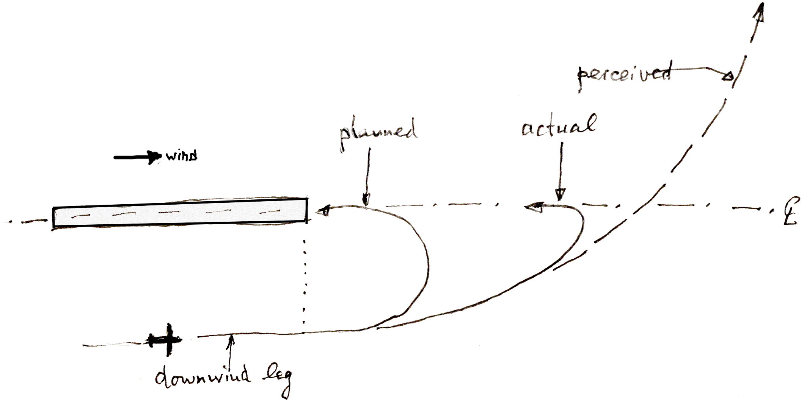
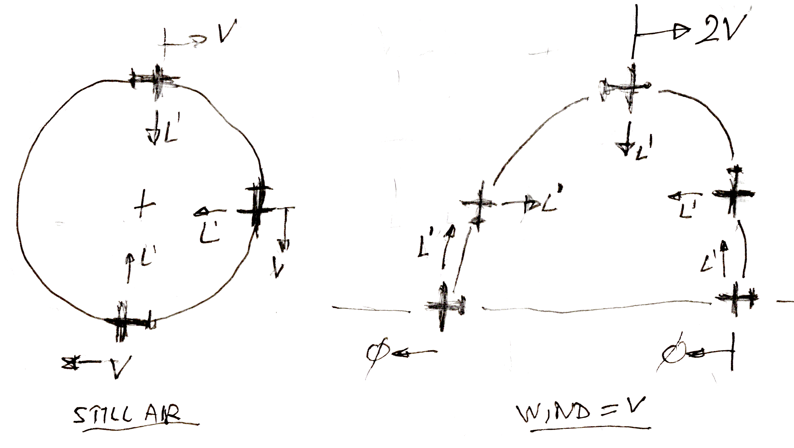

Somewhere in the 1970's there was an ongoing debate in some aviation magazines about the so-called "downwind turn syndrome". This is a type of landing accident which happens in the final turns of the "pattern", and which has killed tens of thousands of pilots.
The "pattern" is the proper way to manoeuver an aircraft towards landing. First, you fly a "downwind leg" parallel to the runway, so you can see what goes on on the ground, and people on the ground can see you.
After passing alongside the runway threshold, you make a 90° turn in for the "crosswind leg", which takes you towards the runway centerline. Then you turn 90° in again to line up with the runway, straight into wind if the wind is right. Sometimes the two 90° turns combine into a single 180° half circle. The problem occurs in the downwind part of this turn, roughly the first 90°.
An aircraft in a nice, coordinated, steady turn describes a circle. But that circle is relative to the surrounding air. Wind blowing from the rear turns this circle into a spiral, or technically a cycloid.
A good pilot will fly the circle "by the seat of their pants", or preferably by the instruments. But in the final turn, they are also trying to line up with the runway, so they are looking at the ground a lot. And here's where it gets dangerous.

Fig. 1 : The "pattern".
Figure 1 shows the flight path in the pattern in three ways. The first way is the circle that the pilot intended. But due to the wind blowing, this is not the actual flight path.
The second way is what is actually going to happen if the pilot flies the correct circle, but the aircraft drifts with the downwind. The path becomes a cycloid. The aircraft will still line up perfectly with the runway after the 180° turn, only further downstream.
At the end of the turn, the aircraft has the altitude that the pilot intended to have at the runway threshold, only much farther out from the threshold. Unless you are in a glider, this can be corrected with a burst of throttle. This is not a big problem, although it does disrupt the nice even glidepath the pilot was hoping for. Next time, the pilot will initiate the turn a little bit before reaching the runway threshold on the downwind leg.
The third way is the problem. If the pilot is focused on the ground and not on the aerodynamics, they will perceive the third flight path to be in their future. They will see a turn that is much too wide, and which will overshoot the runway centerline by a large margin. This is where panic strikes. The pilot will tighten the turn, trying to fly the original circle relative to the ground, not realizing that all will be well in the second 90° part of the turn due to the much smaller radius of the cycloid shape there.
It takes a lot of physical insight, or a lot of experience, or a lot of confidence in the seat of the pants and the instruments, to suppress this urge to tighten the turn. What happens is that people tigthen the turn in an attempt to make it to the runway centerline, and pull on the stick to avoid losing all that height before reaching the runway threshold. This puts them into a spin at very low altitude, and they die.
So far, everyone agrees what the problem is, and how it could be prevented by proper training. The controversy arises when people try to explain what is happening in terms of kinetic energy.
The layman's reasoning goes like this : it can't be true. You have to fly the circle relative to the ground, because it's the physically correct way. The kinetic energy of the aircraft is constant during a circle over the ground, and if you don't move the throttle, the energy input is constant too. So the circle is the way to go.
This is the kind of reasoning that kills people.
The engineer will say that you don't want to see it that way. You have to take the kinetic energy relative to the moving block of air that the airplane is flying in, and then it will be constant if you fly a circle in that air. No throttle input needed. And if it creates a varying speed relative to the ground, too bad.
The problem arises when the lay people say that in the cycloid motion the speed varies all the time, and where does that kinetic energy come from ?
The professional will repeat that the moving block of air is the only valid reasoning. And there is a stalemate. Because the layman has a valid point. The kinetic energy relative to the ground does vary during the cycloid. Where does it come from ? The disappointing thing to me was that the experts never answered this question. The argument just turned into a shouting match over which reference frame to use : ground or air.
The proper solution carries a small surprise. The energy variations in the cycloid are provided by the wing lift.
Interestingly, I have had several professionals call me names for my stupidity, and laymen don't even consider the argument. It is obvious to everyone that the wing lift can never provide energy to the airplane, because a wing is not an engine and it does not generate power.
Hidden behind the professional's response is that the wing lift is at right angles to the flight path, and so it can never add energy to the aircraft, because power is the dot product of force and velocity, and by definition the lift is at right angles to the velocity. Ay, there's the rub. This is only true in the professional's favourite frame of reference.
Figure 2 shows the extreme case where the wind blows just as hard as the airplane's airspeed V. To the left is the ground trajectory at zero wind speed. It is the same as in a moving block of air. The lift is always at right angles to the velocity. If the airplane is banked inward by a roll angle φ, the centripetal force is L ′ ≡ L . sin (φ).
To the right is the ground trajectory at wind speed V. When headed into wind, the aircraft is momentarily standing still. When headed downwind, its ground velocity is momentarily 2 V. Clearly someone has to accelerate the aircraft from zero to 2 V once per cycle, and decelerate it back again.
The diagram shows that the wing lift is the culprit. From standstill, the lift accelerates the aircraft purely sideways, which is the direction in which the aircraft is moving at that time. The wing lift is not at right angles to the ground speed at all. It is completely aligned with it.
At the time of these arguments, I did the math for the general case with sines and cosines, and of course it all comes out exactly right. But I believe Figure 2 gives the proper insight without the need for any further calulation.
Once seen, cannot be unseen.

Fig. 2 : Ground trajectory for wind = 0 and for wind = V .
I've told this little story here not so much because of the physics involved, although I find it charming that way.
Rather, the moral of this story is that it will not do to shout down someone who is genuinely baffled by an apparent error in your point of view. If you cannot answer their concern in their frame of reference, then in my book you are not on top of your profession.